UI 方案示意稿 · 21 版
给「战舰棋」做了 16 版静态示意稿，分七批。前两批"重画现有界面"，第三批是产品级重设计，第四批按反馈精修（第四批就是当前候选：以 C 为底、双盘放大、实体手牌两级预览）。
2026-09-23 · 第一批 A–D（暗色专业 / 暖色实体 / 深色游戏化 / 浅色移动）· 第二批 E–H（主题深蓝 / 极简排版 / 霓虹 / 像素）· 第三批 I–L（统一战场 / 工作台 / 组件化 / 航线）· 第四批 M–P（按反馈精修）· 第五批 R（自查返工）· 第六批 S（移动端调优）· 第七批 T/U（C 的目标选择态与主次反转）· 第八批 V/W（C 的结算屏与卡牌图鉴）
示意稿位置 docs/ui_demos/ · 截图 docs/ui_demos/shots/ · 渲染工具 tools/ui_demo_shots.mjs
这些是静态示意稿，不是可运行版本。前两批每版只画首页与对局屏两块（其余 8 个屏：大厅、排行榜、名片、好友、排位、设置、结算、布阵 沿用同一套语言，选完方向再一起做）。
所有文案、卡名、段位名、数据都取自真实实现（magic_card.json / ranks.py / 现有 DOM 的 id 与 label），所以观感即真实密度。
几何都是量过的：每条竖向预算按 390×844 / 1280×720 / 1440×900 实测收紧，无遮挡、无溢出（见文末「怎么复跑」）。
第一批 · A–D
A
战术指挥台
暗色作战终端：信息密集、发丝线、等宽数字。改动主要在信息架构而非配色。
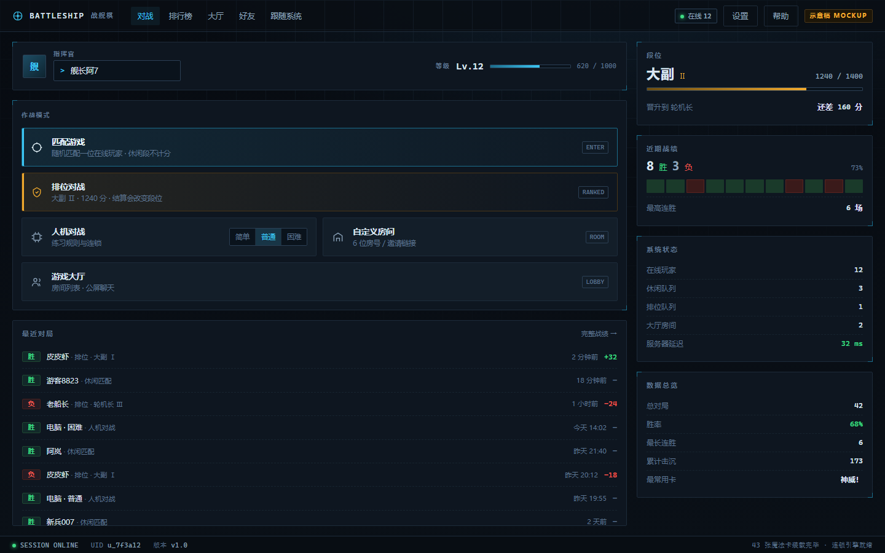
A · 首页 1440×900
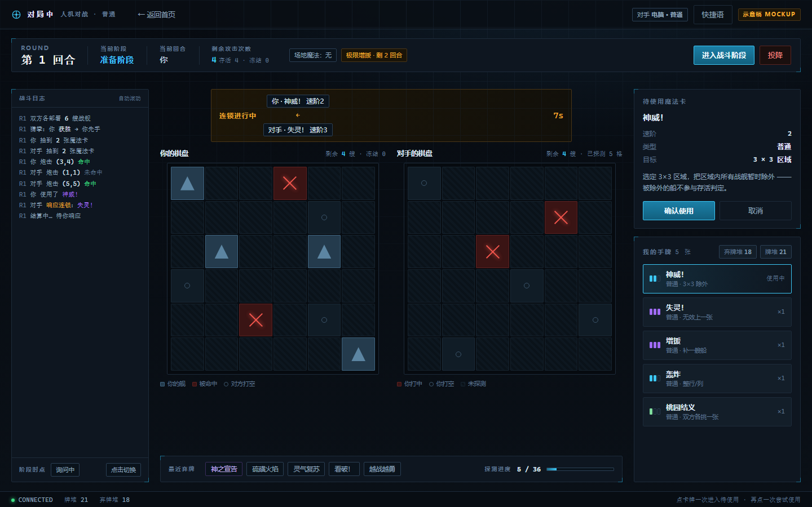
A · 对局屏 1440×900
- 首页从「一列大按钮」变成 模式面板 + 指挥官状态栏 + 最近对局，把段位/战绩/队列都摊开。
- 对局屏改成固定三栏（日志轨 / 战场 / 手牌轨），浮窗不再压在棋盘上。
- 顺带修掉已知缺陷：宽屏两块棋盘可以并排，不再堆叠 —— 这正是
docs/FLUENT_UI_2026_09_21.md §10.3 记的「≤800px 高时第二块棋盘被手牌压住 12–18 格」。
- 连锁从浮层变成战场上方的一条常驻条（现状只有 10 秒弹窗，错过就看不见）。
B
桌面棋室
暖纸 + 黄铜 + 墨线，棋盘是画面主角，手牌是真的实体卡，日志是航海笔记本。
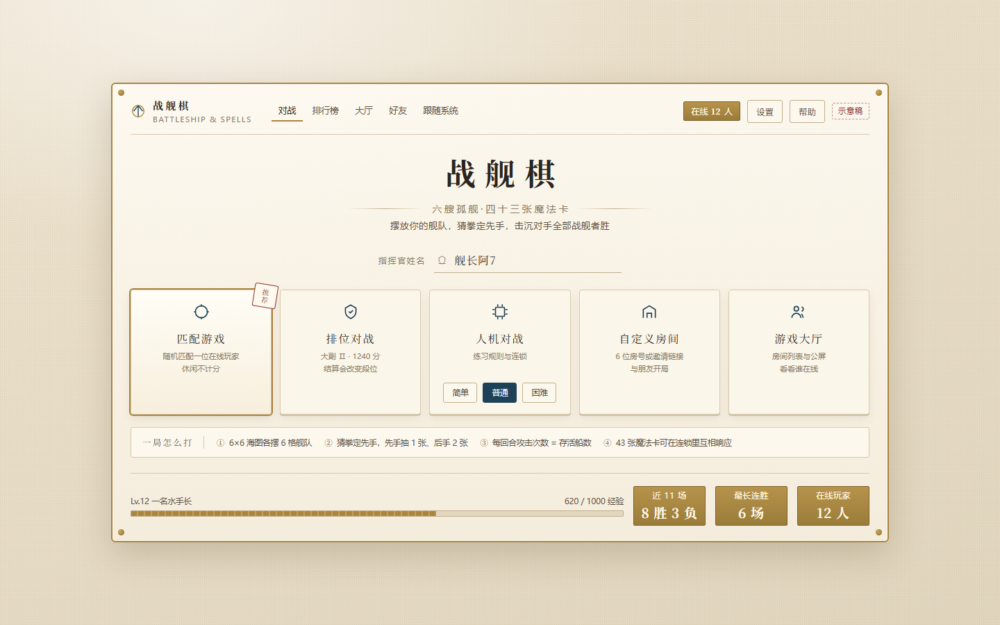
B · 首页 1440×900
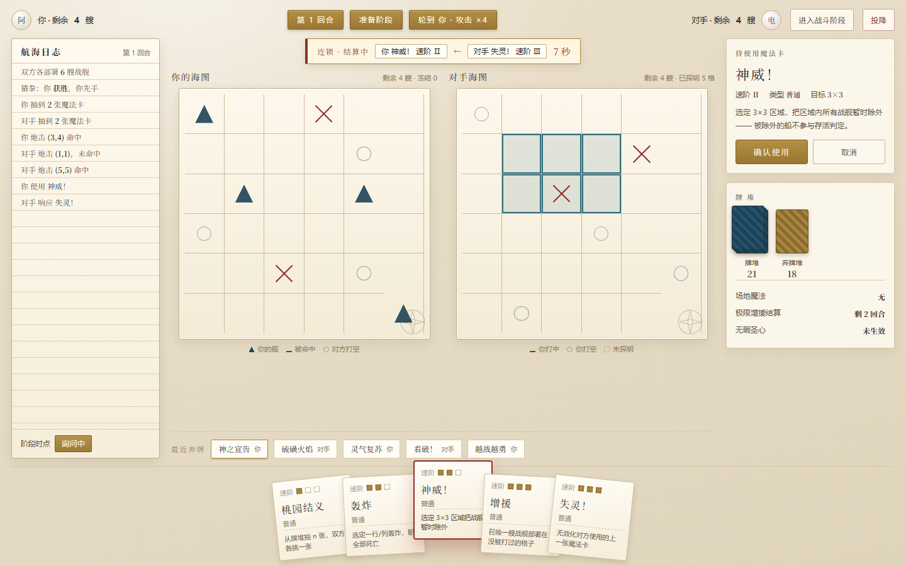
B · 对局屏 1440×900
- 首页像一盒桌游的盒盖：衬线大标题 + 玩法提要 + 五张模式牌，落在桌面中央。
- 对局屏棋盘放大到 400px（现状 300–340），命中/打空用墨印而不是发光。
- 手牌改成底部扇形实体卡（抬起、选中盖红章），弃牌堆是可见的牌堆。
- 「一局怎么打」「最近弃牌」这类信息第一次出现在界面上。
C
卡牌竞技场
魔法卡当主角：132×186 的大卡、连锁做成真的叠起来的牌堆。信息优先级刻意不对称。
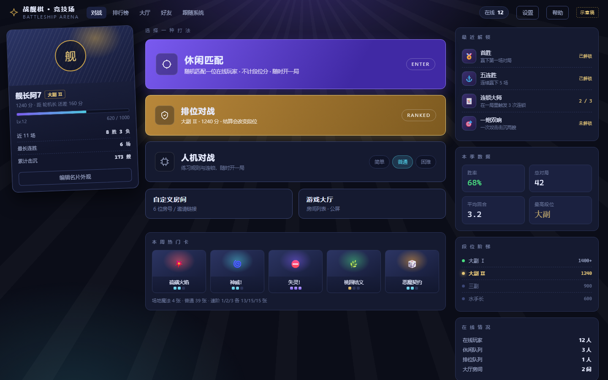
C · 首页 1440×900
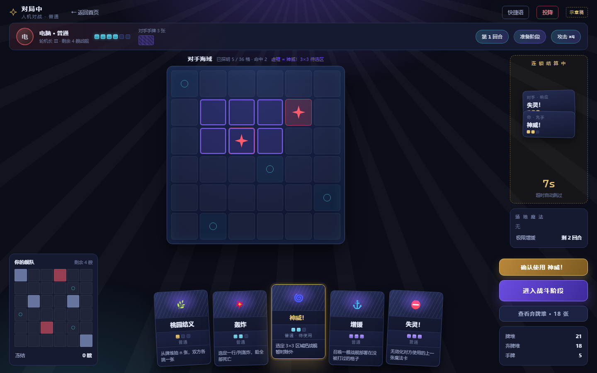
C · 对局屏 1440×900
- 首页 = 倾斜的指挥官名片 + 三个大入口 + 热门卡墙 + 段位阶梯，卖点（43 张卡）第一眼就亮出来。
- 对局屏对手海域占中场（你的攻击目标是它），自己的舰队缩成左下角小图 —— 这是最大的取舍。
- 连锁 = 中场右侧叠成一摞的实体卡 + 倒计时，一眼看清谁响应了谁。
- 手牌是画面上最大的元素，卡面自带速阶宝石与效果文，不再依赖右侧浮窗读描述。
D
口袋舰队（移动端优先）
手机 App 范式：底部标签栏 + 底部抽屉 + 横向滑动手牌，单格 48px。
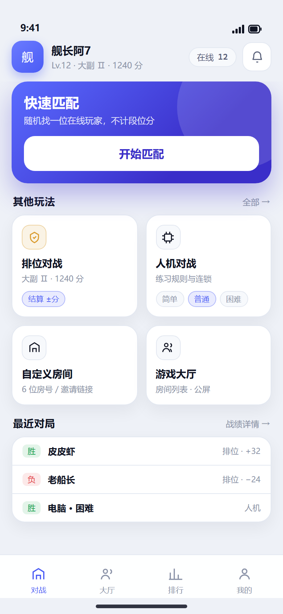
D · 首页 390×844
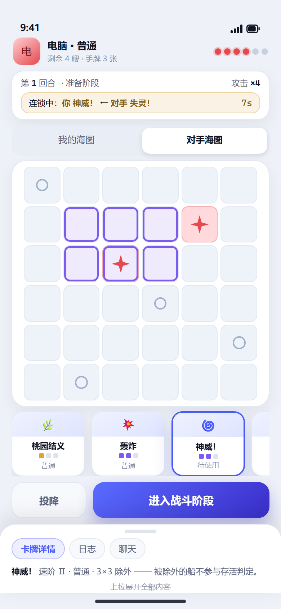
D · 对局屏 390×844
- 桌面打开是手机外框，窗口窄于
520px 自动铺满 —— 就是真机样子。
- 对局屏一次只看一块棋盘，顶部段控件切换：正是现有紧凑档
#board-tabs 的机制，不用新造轮子。
- 底部抽屉对应现有
#aux-dock（卡牌/日志/聊天 三选一），只露出一截提示可上拉。
- 竖向预算是硬约束：390×844 里 8 块内容 + 间距共 837px 塞进 844px，全部实测过的。
- 触摸目标全部 ≥48px，正好在本项目「格子 ≥40px」的判据之上。
第二批 · E–H
E
声呐舰桥
深海蓝 + 磷光绿，圆形仪表与声呐同心圆 —— 主题上最贴「战舰棋」的一版。
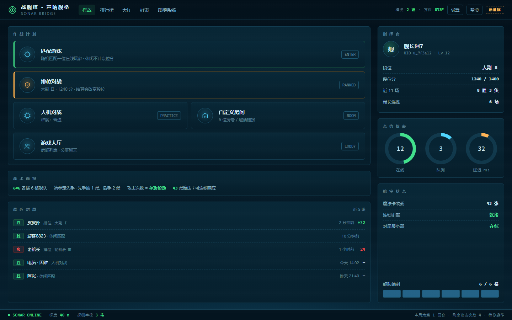
E · 首页 1440×900
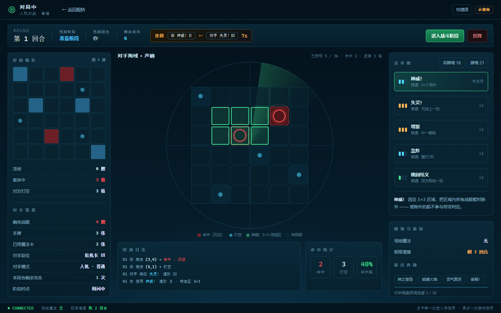
E · 对局屏 1440×900
- 首页把「在线 / 队列 / 延迟」做成三个环形仪表，一眼报数。
- 对局屏把对手棋盘做成声呐显示区：背后同心圆环 + 十字基线 + 扫描扇面。
- 刻意不做圆形棋盘：真圆形会把 6×6 的四个角裁掉、格子在圆外点不到；这里用「方形棋盘 + 圆环背景」，每格完整可点。
- 自己的舰队缩成左栏小图（同 C 的信息取舍）。
F
极简纸白
编辑式排版：近单色、无阴影无圆角，只用发丝线与字重组织层级。
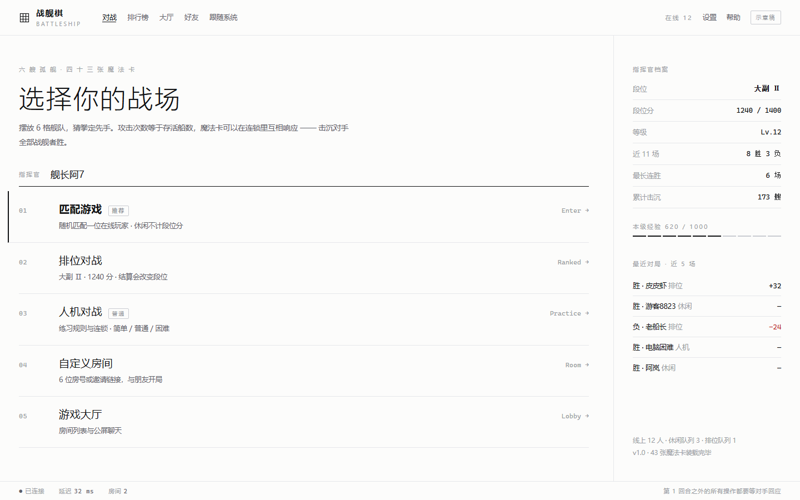
F · 首页 1440×900
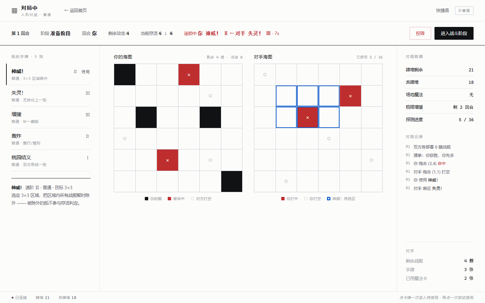
F · 对局屏 1440×900
- 棋盘是一张只用 1px 线画出来的表：舰=实心黑块、命中=红块带 ×、打空=空心圆。
- 魔法卡是一张表（卡名 / 速阶罗马数字 / 效果），选中行左侧一道黑杠并展开全文 —— 不画卡面。
- 首页 = 大字号细体标题 + 编号列表 + 右侧数据表；等级条是 10 段刻度而不是色块。
- 全局只有两个语义色（命中红、主行动黑），其余全靠留白 —— 信息密度最高、视觉噪音最低。
G
霓虹赛博
近黑底 + 霓虹发光 + 扫描线 + 切角面板 + 故障字。把音量拧到最大的一版。
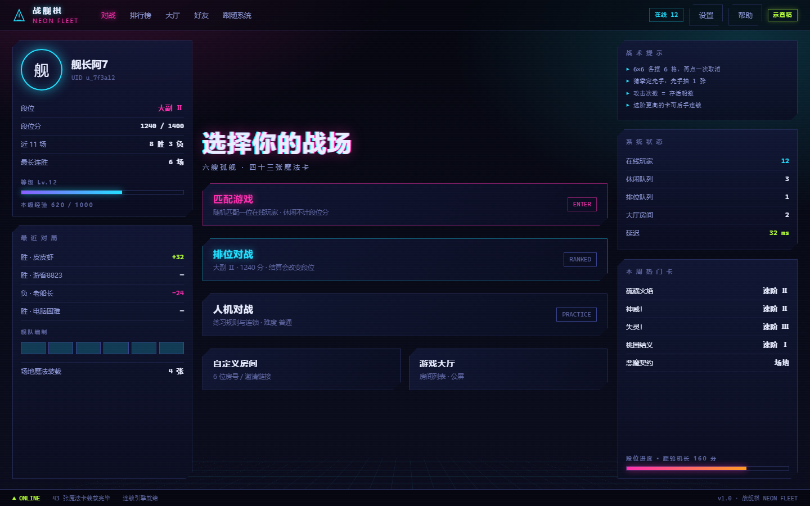
G · 首页 1440×900
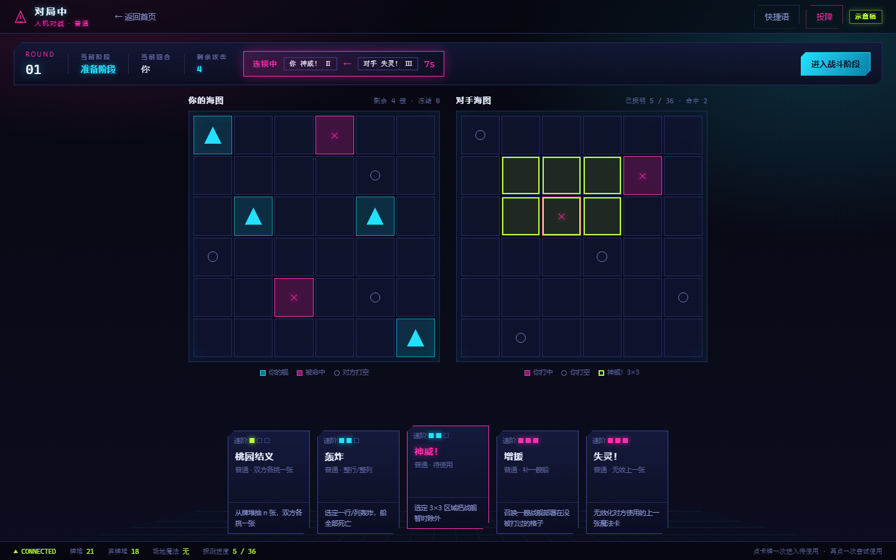
G · 对局屏 1440×900
- 标题是「故障字」（青/洋红错位），面板用
clip-path 切掉两个角。
- 棋盘格是发光霓虹框：舰=青色三角、命中=洋红 ✕、神威！待选区=荧光黄。
- 手牌是底部一排切角霓虹卡，选中的卡上浮并泛洋红光。
- 连锁做成会呼吸的洋红警示条 —— 全屏最「吵」的元素就是当前该你决策的地方。
H
像素复古（8-bit 街机）
硬边框斜面、等宽大写、扫描线、▶ 光标、分数面板、JRPG 对话框。
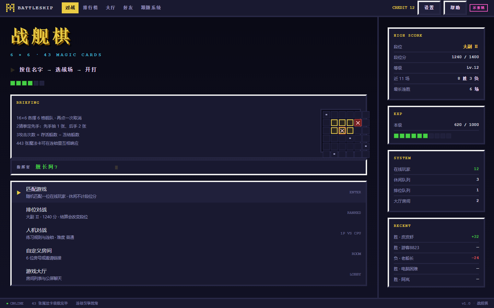
H · 首页 1440×900
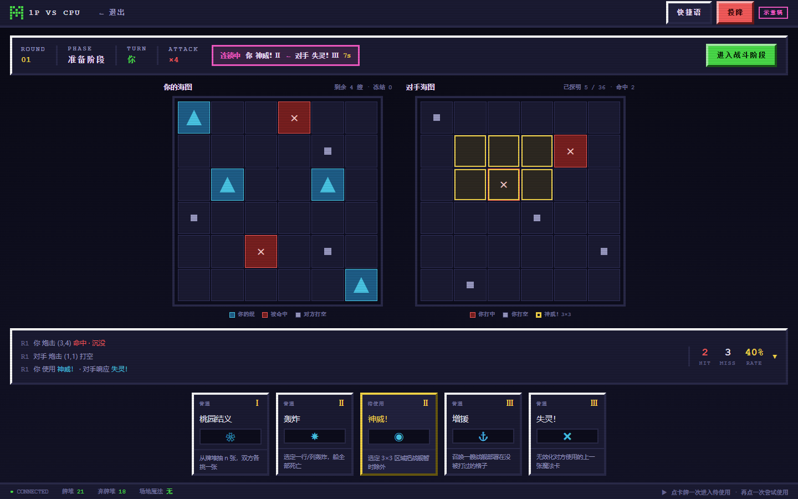
H · 对局屏 1440×900
- 首页是街机标题画面：像素标题、▶ 光标选单、HIGH SCORE / EXP / SYSTEM / RECENT 四块面板。
- 对局屏底部是对话框（三行战报 + HIT/MISS/RATE 分数 + 闪烁 ▼），日志从浮窗变成常驻。
- 手牌是「道具卡」：明暗斜面对边框 + 大写速阶罗马数字。
- 诚实取舍：中文没有可用的像素字体（本项目不许引外部资源），像素感只能靠边框与结构做出来，中文仍是系统字。
第三批 · I–L（产品级重设计：不受现有布局约束）
这一批不再"重画现有界面"，而是重新设计**信息架构**，并且每一版都用同一个响应式页面在
1440×900 与 390×844 各出一套图 ——
手机上怎么收、桌面上怎么展，是同一个文件、同一套组件，不是桌面版加手机版两张皮。
每版都标了参考的成熟产品手法。
I
同一片海
把两块互不相干的棋盘合成一片 6×12 的海图，中间一条「前线」。窄屏竖着折叠、宽屏横着展开。
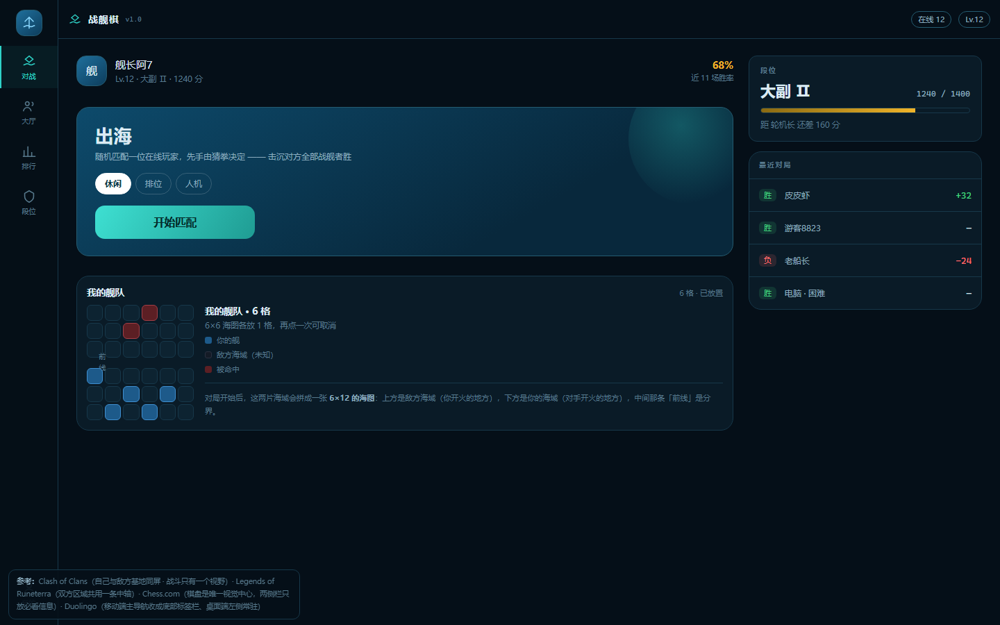
I · 首页 1440×900
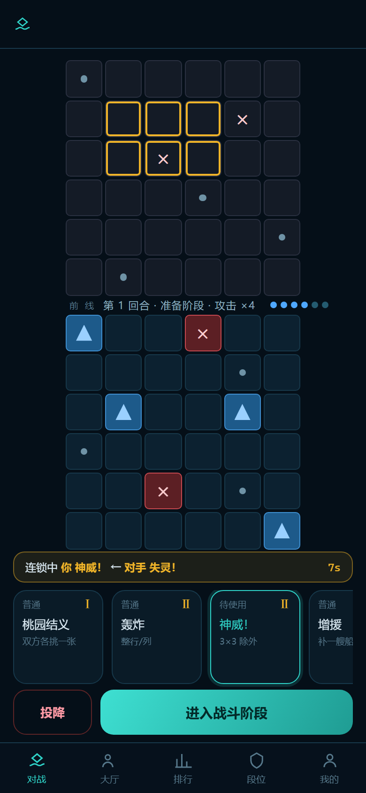
I · 对局 390×844（同一个文件）
- 核心改动：现在"你的棋盘 / 对手的棋盘"是两个互不相干的对象；这一版把它们当作同一片海的两片海域，你的攻击与对手的攻击都发生在一张图上。
- 两端打通：窄屏两片海域上下长卷（前线是横线），宽屏左右双页（前线变书脊）—— 同一个对象两种折法。
- 状态栏放在中轴上（窄屏顶栏放不下就把回合/阶段挪到前线那条），首页的"我的舰队"小图与对局里的海图是同一个东西。
J
工作台
左轨道 + 画布 + 右检查器；选中即详情。手机把检查器收成上拉面板、轨道收成底部标签栏。
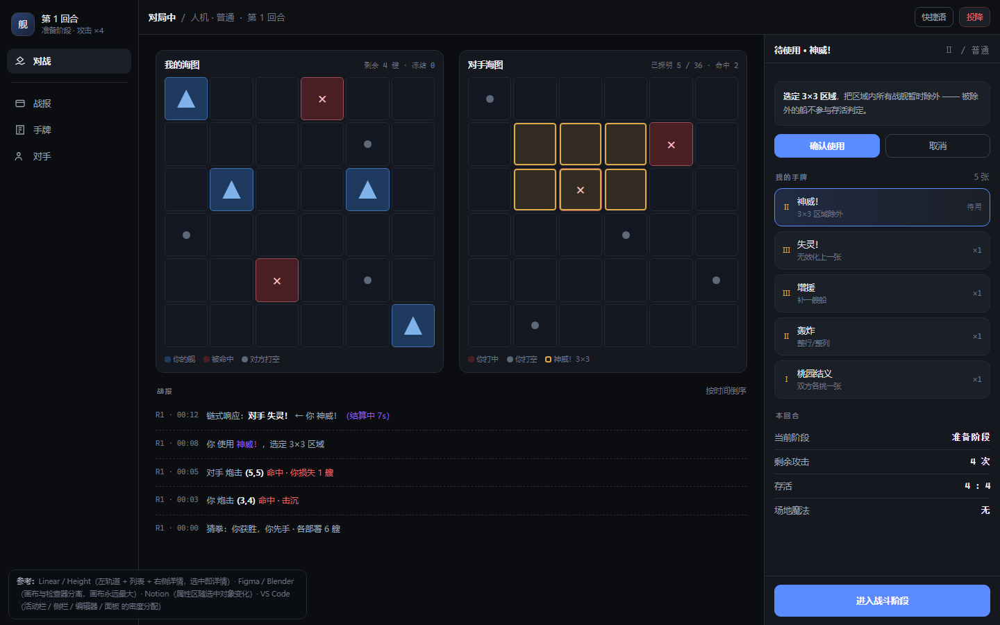
J · 对局 1440×900
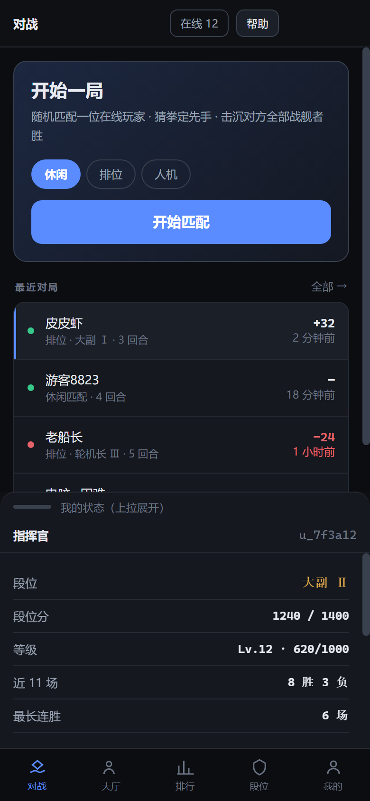
J · 首页 390×844（同一个文件）
- 魔法卡不再是"一排卡面"，而是检查器里的一张列表：点一行，上面就展开它的全文与"确认使用"。
- 战报是画布里的一条时间线，不是浮窗；棋盘是画布上的一块面板，规格与状态写在面板头上。
- 同一套三区在手机上变成"画布 + 上拉面板 + 底部标签"，桌面变成"三栏并排"—— 这是这一批里两端差异最自然的一版。
K
组件主页 · 焦点对局
主页是一屏可扫读的组件；对局是焦点模式：90% 是棋盘，其余全收进一个「更多」。
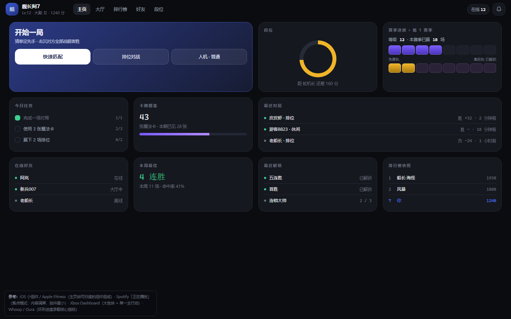
K · 主页 1440×900（4 列组件）
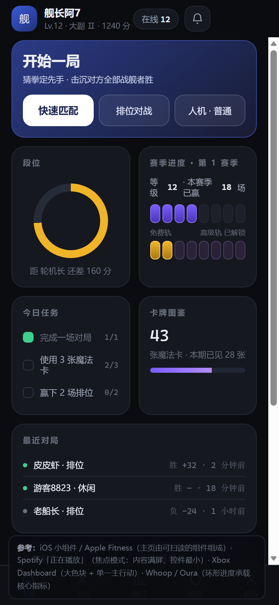
K · 主页 390×844（2 列，同一组组件）
- 组件：快速开战 / 段位环 / 赛季进度 / 每日任务 / 卡牌图鉴 / 最近对局 / 在线好友 / 本周最佳 / 成就 / 排行快照 —— 同一组组件按列数自适应。
- 对局顶栏只剩回合与阶段，手牌是底部浮动 dock，日志与统计收进「更多」（桌面右侧抽屉 / 手机上拉面板）。
- 棋盘被放大到 430px（现状 300–340），页面装饰几乎为零 —— 这是"内容优先、壳最轻"的路子。
L
航线 · 赛季通行证
把段位从"一个数字"变成一条可走的航线，进度本身就是导航；对局是竖屏街机台。
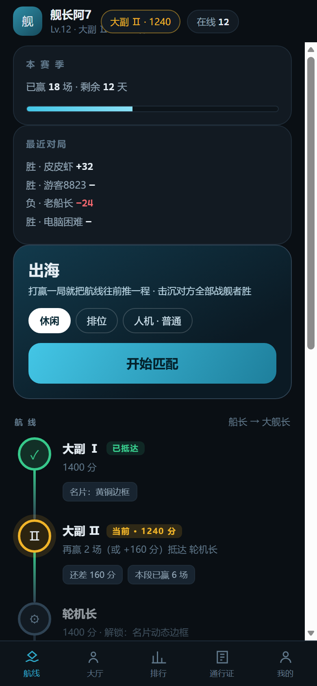
L · 主页 390×844（航线 + 通行证）
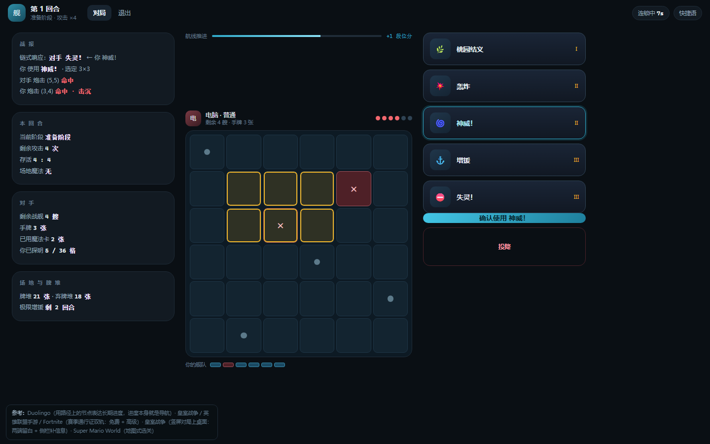
L · 对局 1440×900（竖屏舞台 + 侧栏）
- 航线节点 = 段位节点，每个节点写清"到这里解锁什么"，你的船停在当前节点上；玩一局 = 往前推一程。
- 模式选择从"5 个并排按钮"收成一个主按钮 + 一行段控件（出海 → 休闲/排位/人机）。
- 赛季通行证双轨（免费 / 高级）；对局屏在桌面也保持竖屏，两侧填战报与手牌。
- ⚠️ 这一版含新功能（航线可视化 + 赛季通行证涉及商业化），不只是 UI —— 选它要先做产品决策。
第四批 · M–P（按反馈精修，不是新风格）
这一批不新增风格，只把已确认的方向按反馈修到位。反馈里的取舍已经落进文件：以 C 为底、
主页保留 C 的观感并综合 I 的主行动、手牌做成真实卡牌、自己的棋盘放大、
去掉通行证等商业化内容；并淘汰复古风（H 像素 + B 的暖纸黄铜）与手机端优先（D）。
M
竞技场精修 · 双盘等大
C 的气质 + I 的主行动 + 两块棋盘一样大 + 实体手牌两级预览。
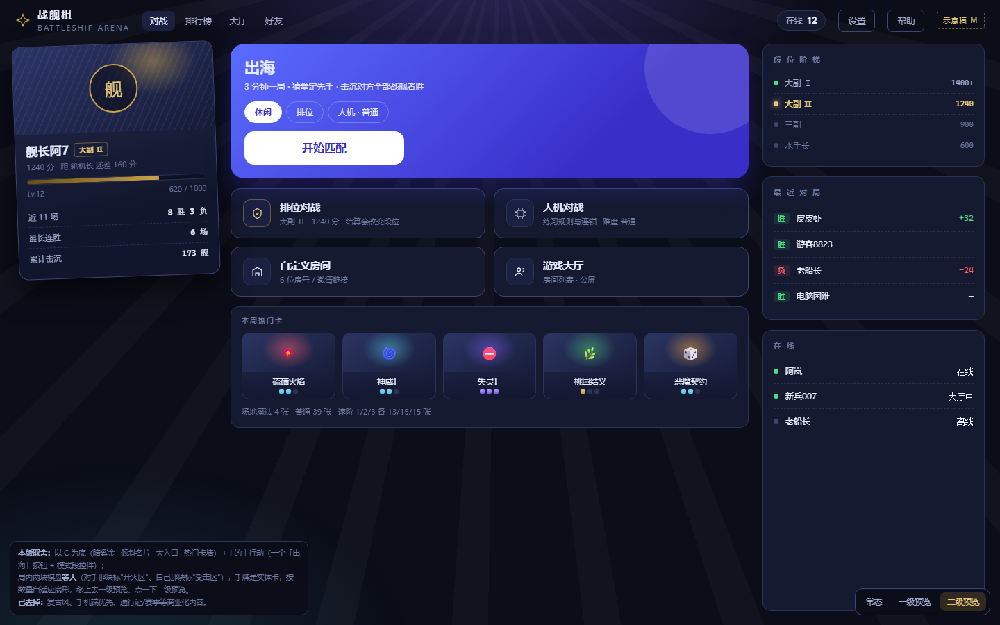
M · 首页（C 的骨架 + 一个「出海」主按钮）
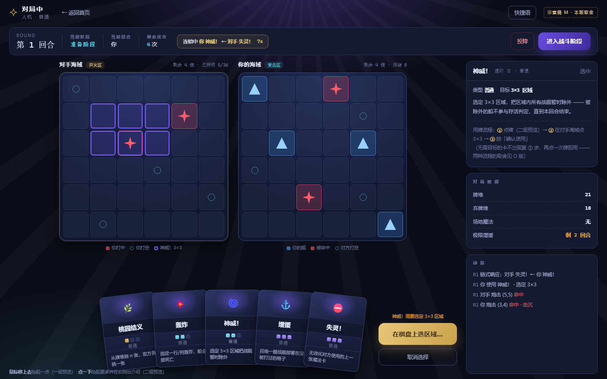
M · 对局（双盘 400 等大 + 扇形手牌）
- 主页：倾斜指挥官名片 + 热门卡墙 + 段位阶梯（C 保留），模式选择收成一个「出海」按钮 + 一行段控件（I 的做法）。
- 局内两块棋盘等大且都到 400px —— 直说修掉"C 里自己棋盘只有 200px"的问题。
- 手牌是实体卡，按数量自适应扇形；悬停抬起一级、点击抬起更多并在右侧出介绍（二级）。
P
竞技场最小改动
主页与配色完全沿用 C，只动局内两处 —— "就改一改能用"的那条路。
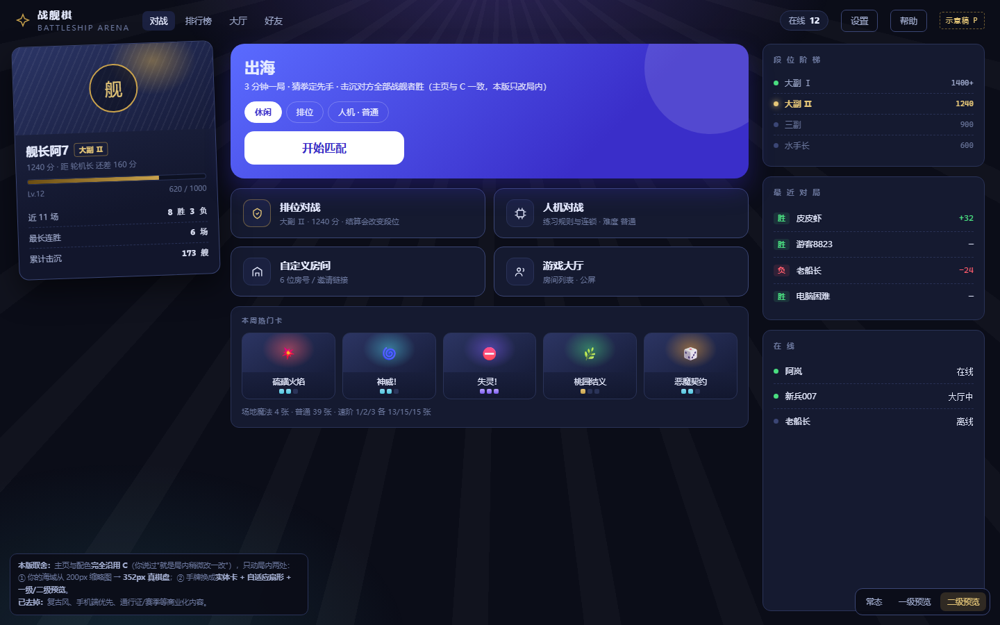
P · 首页（与 C 一致，本版不动）
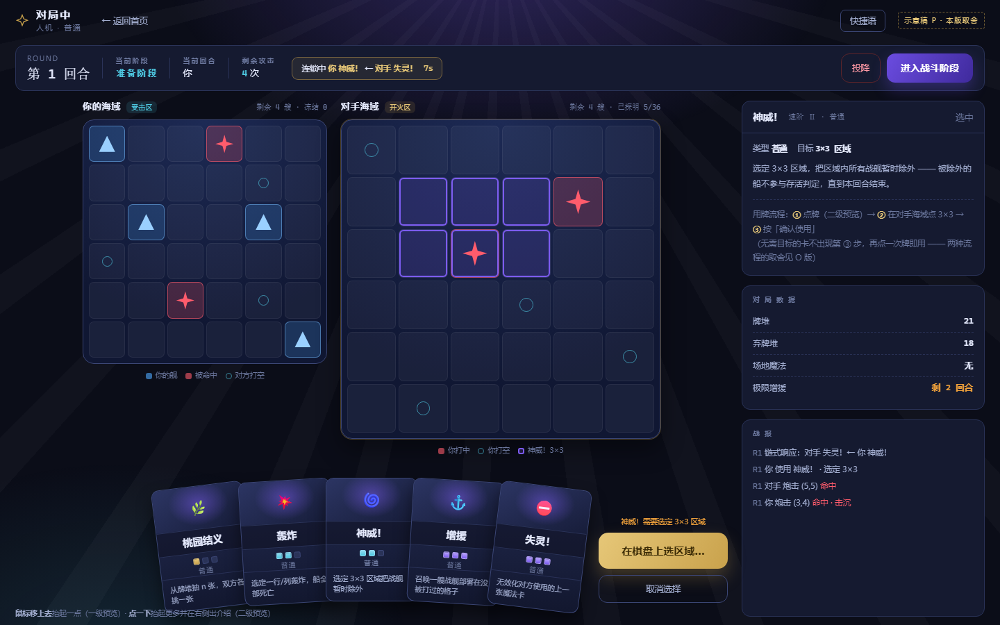
P · 对局（你的海域 352 真棋盘 + 对手海域仍是中场焦点）
- 改动只有两条：① 你的海域从 200px 缩略图 → 352px 真棋盘；② 底部手牌换成实体卡 + 一级/二级预览。
- C 的其余部分（对手海域居中、连锁列、暗紫金、主页）一个都没动 —— 回归风险最低。
- 两块棋盘仍是不对称的（对手 460 / 你 352），因为你开火的地方是对方海域。
O
手牌与预览行为（规范稿）
不换皮，专讲手牌：按张数自适应 + 两级预览的位移规范 + 用牌流程对照。
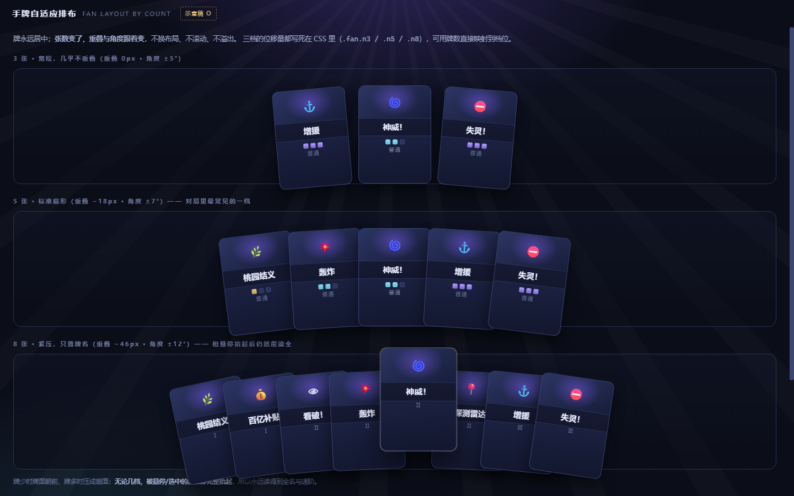
O · 3 / 5 / 8 张的自适应扇形
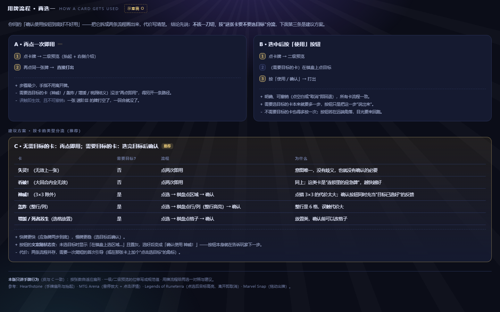
O · 用牌流程两选一 + 建议方案
- 自适应：牌永远居中；3 张几乎不重叠、5 张标准扇形（−18px / ±7°）、8 张紧压（−46px / ±12°）但抬起后仍能读全。
- 两级预览写成了规范值：一级
translateY(-30px) scale(1.05)（不改状态，移开回位）；二级 translateY(-56px) scale(1.09)＋金色描边＋右侧介绍窗。
- 用牌流程把「再点即用」与「按钮确认」并排画出来，并给出建议：按"这张卡要不要选目标"分流 —— 无需目标的卡点两次即用，需要目标的卡选完目标再确认；按钮文案随状态变（未选目标时置灰显示「在棋盘上选区域…」）。
已淘汰
按反馈本轮淘汰的方向
不是删掉文件，是标出"不再作为候选"。
- H 像素复古 与 B 桌面棋室的复古观感 → 淘汰（但 B 的「真实手牌」思路保留，已并入 M/P/O）。
- D 口袋舰队（手机端优先）→ 淘汰。
- L 航线：通行证 / 赛季进度 / 航线节点 → 全部去掉（商业化内容与"进度即导航"都不需要）。
- K 的「赛季进度」组件同理去掉；其余组件化思路不受影响。
保留文件做参照，不参与选择
第五批 · R（自查返工）
交付第四批后自查发现一处硬伤：那三版的"卡"是 62px 横条插图 + emoji 占位，
本质是深色小方块，不是真实卡牌 —— 你连着强调"真实手牌"还提到要配卡面，这一处不达标。
R 版把卡按真实 TCG 结构重做，并把我在 M 里退化掉的「连锁叠牌」恢复。
R
真实卡牌版
卡尺寸 150×210（比例同真实 TCG 63×88mm）· 满幅插画占 53% · 名牌 + 速阶宝石 + 独立说明框 · 双层卡框 + 实体厚度 · 三态同屏对比
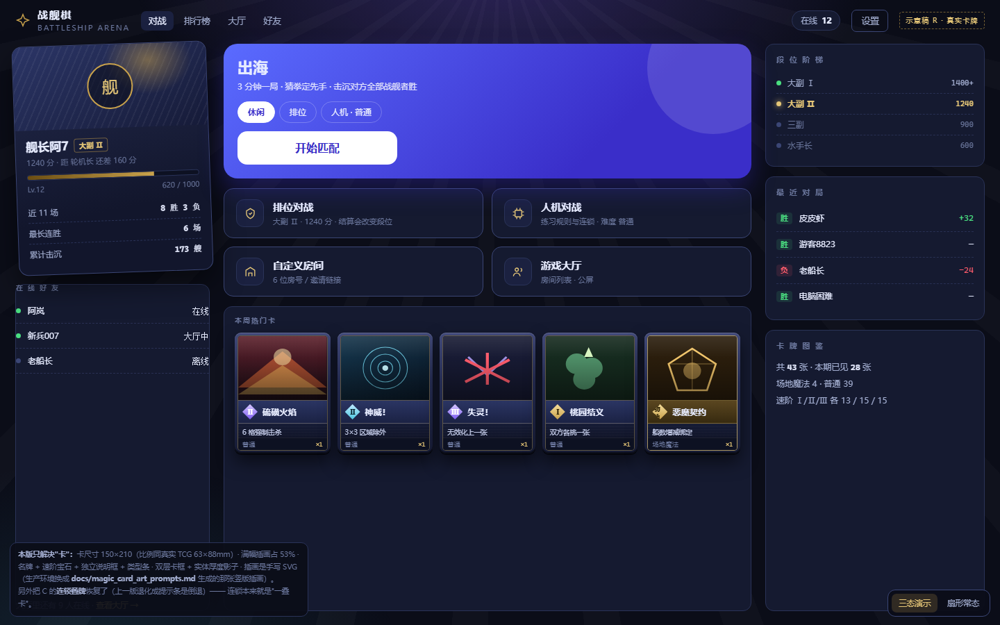
R · 首页（本周热门卡用真卡展示）
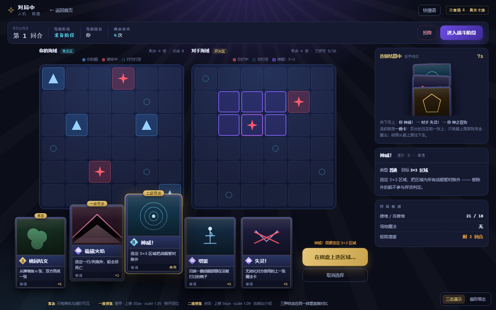
R · 对局（三态同屏 + 连锁叠牌 + 真卡手牌）
- 卡面结构：满幅插画（104px / 53%）→ 名牌 + 速阶宝石 → 独立说明框 → 类型条；卡框是双层（外层暗金描边 + 内层亮线 + 顶部高光 + 底部厚度影子）。
- 插画不再用 emoji：每张牌一个手写内联 SVG 意象（雷达同心圆 / 火焰弧 / 断链叉 / 桃形簇 / 契约五芒）。生产环境这一块就是
docs/magic_card_art_prompts.md 生成的那张竖版插画。
- 连锁恢复成叠牌：右栏是三张真卡叠起来（每张只露 34px 切片，只有最上面那张全露），并标出自下而上的响应顺序 —— 连锁本来就是"一叠卡"，M 里退化成提示条是倒退。
- 三态同屏：常态 / 一级预览（−30px · 1.05）/ 二级预览（−56px · 1.09 + 右侧出介绍）在同一排里直接对比，不再另开说明页。
- 仍待定：这些数值（扇形角度、重叠、抬起量）目前是我按"手感"定的，正在做市面卡牌游戏的调研，回来后用实测/公开数据替换。
第六批 · S（移动端调优）
按一手来源（Apple HIG / W3C / androidx 的 Material 3 令牌 / Balatro 反编译源码）调优手机布局。
三条查实的问题：① index.html:5 缺 viewport-fit=cover 而 style.css:3665/3978 用了
env(safe-area-inset-bottom) → iOS 上留白恒为 0；② style.css:3831 紧凑档手牌 64×92，中文效果文字读不了；
③ adaptive_layout.js:135 在 390×844 上判为"两块 364px 棋盘上下堆"，而实测可用高只有 763px（844−47−34）。
S
移动端调优 · 一屏一块 · 真卡抽屉
手机改走 tabs（一次一块棋盘，格宽反而更大）· 小卡只负责"认出是哪张"、抽屉里给 200×280 可读大卡面 · 操作条进拇指区 · 按实测安全区算预算
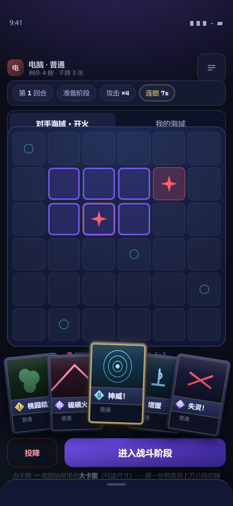
S · 对局 390×844（格宽 55px）
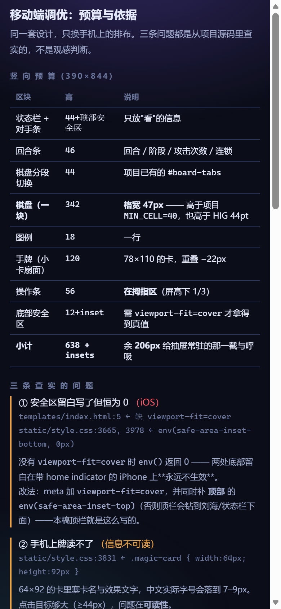
S · 预算与依据（含一手来源）
- 格宽：390×844 下 55px、320×568 下 41px、横屏 664×336 下 41px —— 三档都高于项目
MIN_CELL=40，390 那档也高于 HIG 44pt。
- 竖向预算按实测可用高 763px 算：状态栏 47 + 顶栏 87 + 回合条 42 + 棋盘 366 + 手牌 150 + 操作 48 + 安全区 34 = 774（含留白），战报改走抽屉。
- 抽屉令牌用 Material 3 实现值：遮罩 32% 黑、顶部圆角 28dp、把手 32×4dp；操作条 48px（Material 推荐 48dp）、间距 12px（Apple 建议）。
- 两条被独立印证的决定：手机一屏一块（两块 632 + 手牌 110 + 顶栏 44 + 操作 48 = 834 > 763）；需要选区域目标的卡要有确认步（Hearthstone 无确认但选的是单点，Balatro 对"先选再确认"才有先例）。
- 仍为推测：各游戏客户端手牌像素尺寸、拇指区百分比、320 宽机型安全区为 0、"点开放大"对 CJK 小字的实际收益。
第七批 · T/U（C 上的新状态与新主次）
T目标选择态
点开 神威！之后到底发生什么：落点高亮 → 已选待确认 → 越界无效 三个状态。
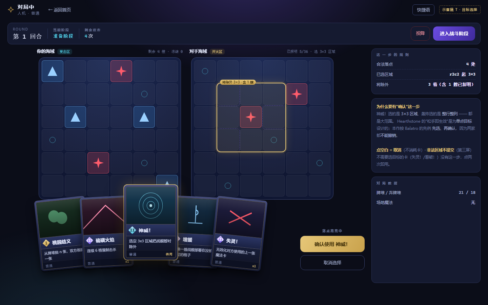
T · 选目标（合法锚点 + 当前 3×3）
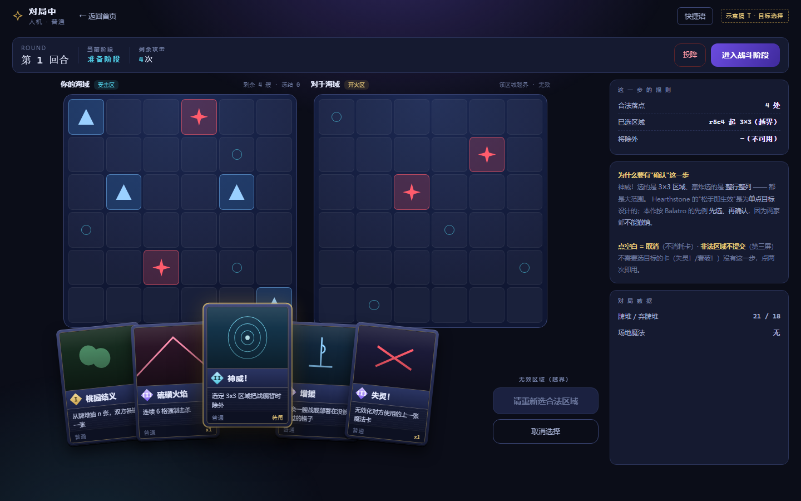
T · 越界无效（不提交、不消耗卡）
- 依据一手调研：Hearthstone 的"松手即生效"是为单点目标设计的；神威！是 3×3 区域、轰炸是整行整列，
误触代价大得多，而两家都不能撤销 → 按 Balatro 的先例先选、再确认。
- 确认按钮 48px；越界时置灰成「请重新选合法区域」；点空白 = 取消（不消耗卡）。
- 覆盖层按真实格子矩形解析定位 —— 越界那种目标格不存在的框能自然画到棋盘外（我的第一版正是在这里崩了，说明非法态是必须处理的分支）。
U我为主（主次反转）
你的海域当主角（最大 560px、格宽约 80px），对手海域缩成右栏 240px 雷达盘。
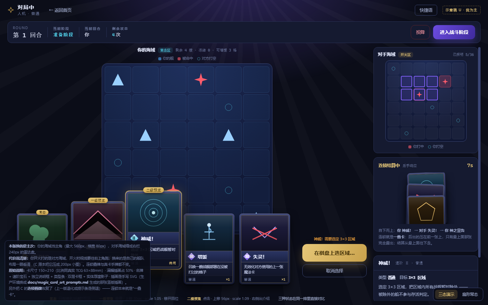
U · 对局（你的海域 504px）
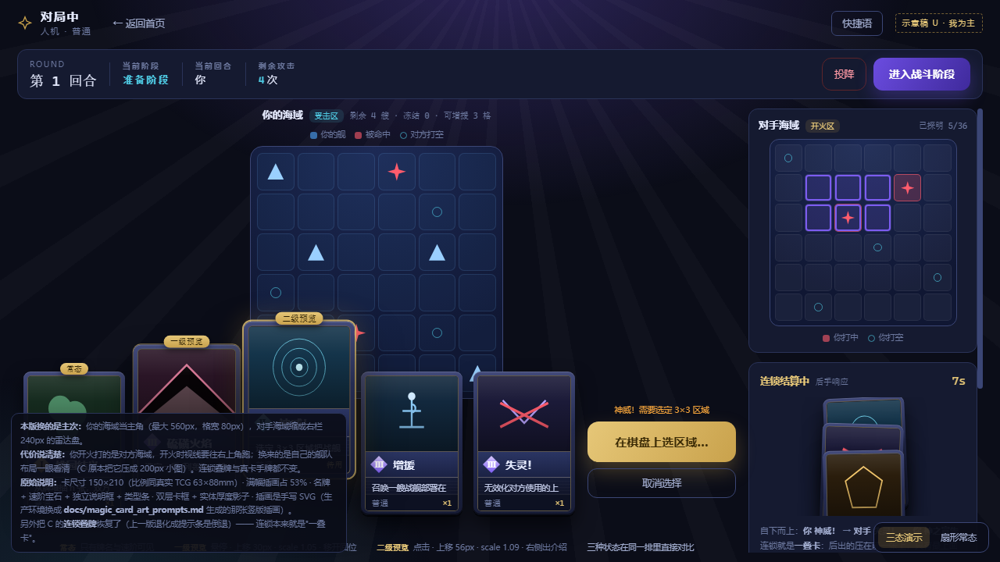
U · 对局 1280×720
- 直接回答"自己的棋盘太小"：C 把它压成 200px 小图，这里给到 504px。
- 代价写在页面上：你开火打的是对方海域，开火时视线要往右上角跑。
- 连锁叠牌、真卡手牌、两级预览都不变；720 档右栏改成可滚而不是静默裁掉。
第八批 · V/W（C 的另外两个屏）
此前 19 版全都只画了「首页 + 对局屏」。这两版补上 C 线上从没画过的结算屏与卡牌图鉴。
V结算屏
胜负裁决 + 段位变化 + 经验条 + 本局数据 + 成就解锁 + 再接一局。胜利与失败两态都画了。
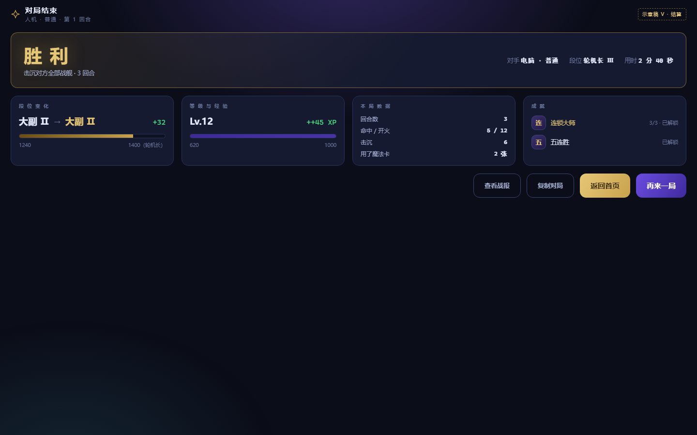
V · 胜利（+32 分、连锁大师解锁）
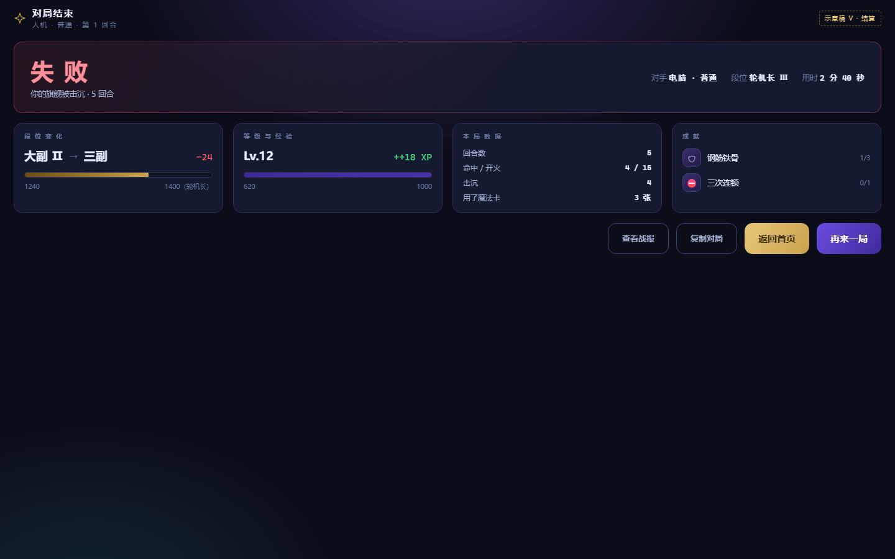
V · 失败（−24 分、掉段提示）
- 胜负用头部横幅区分（赢是金、负是红），右边统一给出段位前→后 + 变化值。
- 掉段那态特别处理：段位名从「大副 Ⅱ」变「三副」，进度条回落 —— 这是最容易做崩的一态。
- 四个动作：查看战报 / 复制对局 / 返回首页 / 再来一局。
W卡牌图鉴
真卡网格 + 速阶/类型筛选 + 已见/未发现三态 + 右栏卡面详情。41 张卡面的落点。
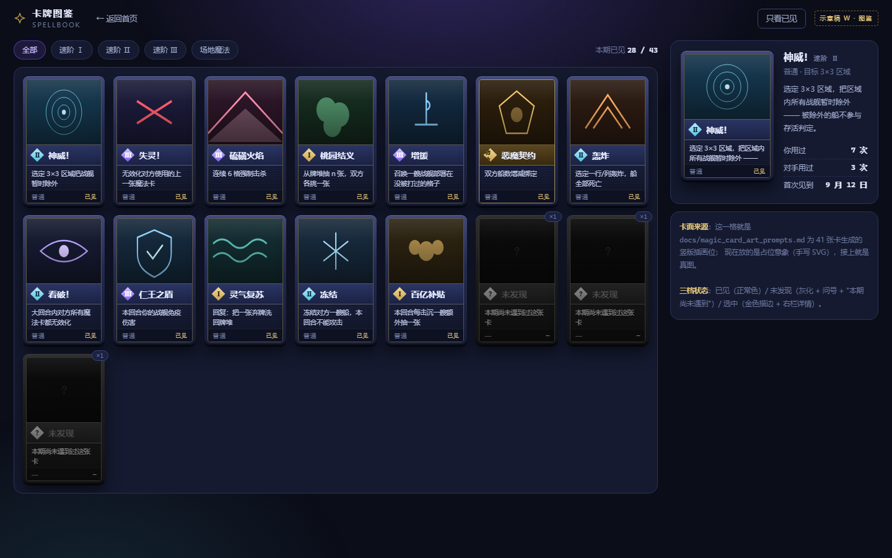
W · 图鉴（已见 28/43）
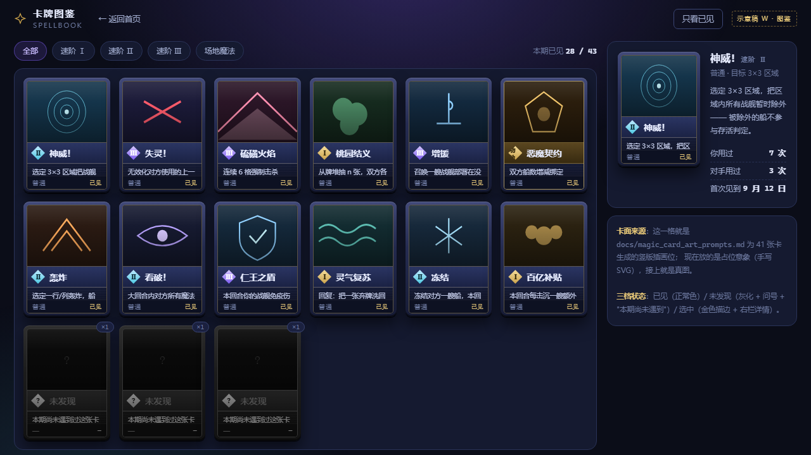
W · 图鉴 1280×720
- 三态：已见（正常色）/ 未发现（灰化 + 问号 + "本期尚未遇到"）/ 选中（金色描边 + 右栏详情）。
- 右栏详情给出"你用过 7 次 / 对手用过 3 次 / 首次见到 9 月 12 日"—— 图鉴不只是收藏，也是个人数据。
- 这一格就是
docs/magic_card_art_prompts.md 的 41 张竖版插画的落点，现在放的是占位意象。
与现状对照
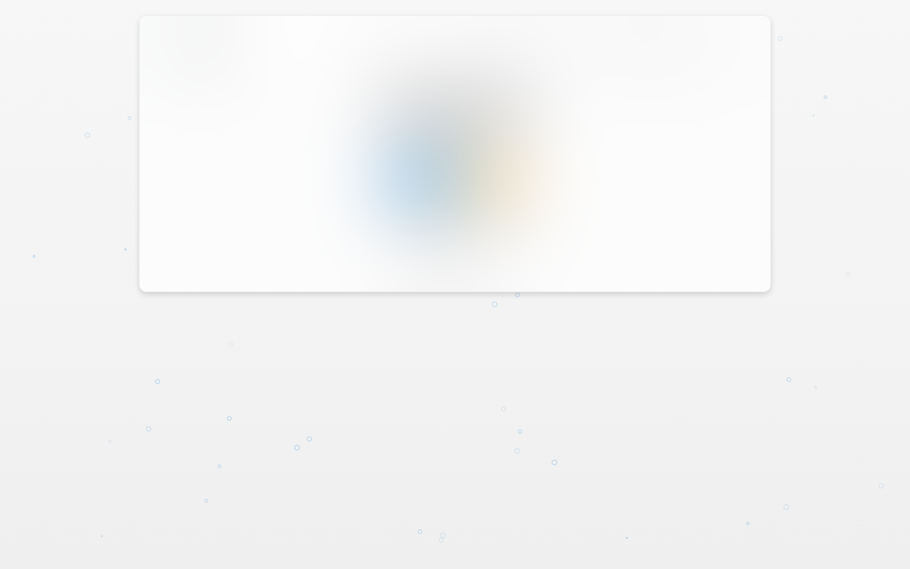
现状 · 首页 1440×900（Fluent 2）
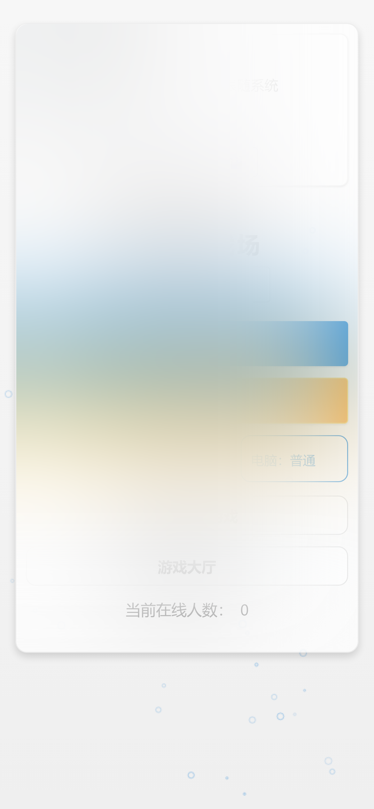
现状 · 首页 390×844
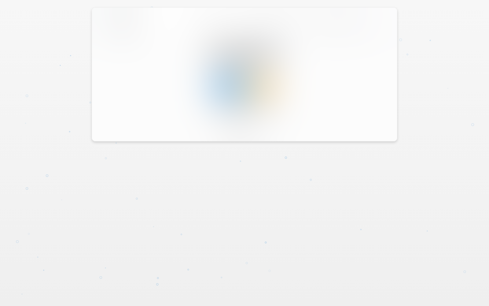
现状 · 首页 1600×1000
落地代价对照
判断依据是本项目自己的门禁，不是主观印象：ui_layout_check.mjs（128 项，含「两块棋盘同尺寸且 ≥280px」「紧凑档零纵向滚动」「触摸 ≥40px」「浮窗零叠压」）、
dom_contract_check.mjs（悬空 id）、fluent_style_check.mjs（.game-container 等不许有 transform/filter/backdrop-filter）、
以及断言源码字符串的 pytest。
| 方向 | 要重定哪条不变量 | 要动的代码 | 能修掉的现存缺陷 | 总代价 |
|---|
| A 战术指挥台 |
宽屏 1200–1439 那段「为浮窗留白」的 padding 规则要重写；「两块棋盘同尺寸且 ≥280px」这条不用改，改成并排后自动满足 |
对局屏外壳 CSS（三栏）+ 首页重排；id 全保留 |
§10.3 第二块棋盘被手牌压住；连锁提示不可回溯；日志被折成浮窗 |
中高 |
| B 桌面棋室 |
棋盘上限从 340px 放宽到 400px；手牌扇形只用 transform，不碰盒模型 |
视觉层为主（style.css + 字体/材质） |
卡牌太小读不了描述；棋盘不是主角；缺玩法说明 |
中 |
| C 卡牌竞技场 |
多出一个 36 格的迷你棋盘 →「两块棋盘」类断言要按「主棋盘 2 块 + 迷你 1 块」重写 |
新增迷你棋盘渲染器（现 game.js 只往两个 id 各画 36 格）；手牌尺寸翻倍 |
卡牌描述不可读；连锁过程不可见；43 张卡存在感几乎为零 |
高 |
| D 口袋舰队 |
无冲突 —— 它本来就照紧凑档的不变量设计（零滚动 / 一次一块棋盘 / 抽屉三选一） |
移动档 CSS + 把抽屉接到现有 #aux-dock；宽屏沿用现状 |
窄屏导航散乱、浮窗互相遮盖、触摸目标偏小 |
低 |
| E 声呐舰桥 |
同 C：多一个只读的迷你舰队盘；声呐圆环/扫描扇是纯装饰，不参与布局 |
迷你盘渲染 + 外壳 CSS；环形仪表用 conic-gradient，不需要新依赖 |
同 C（卡牌描述不可读）；主题贴切度全批最高 |
中高 |
| F 极简纸白 |
几乎无冲突：两块棋盘、紧凑档零滚动都保持不变 |
style.css 排版层 + 手牌改成表格（要动 game.js 的手牌渲染） |
信息噪音最低；卡牌描述改成「选中行展开」，不再依赖浮窗 |
低中 |
| G 霓虹赛博 |
同 A（宽屏留白规则重写）；发光用 box-shadow/text-shadow、切角用 clip-path，都不动盒模型 |
外壳 CSS + 手牌换皮（手牌本来就在底部一排） |
连锁存在感最强；命中/打空的视觉区别最明显 |
中 |
| H 像素复古 |
同 A；另外日志要从可折叠浮窗改成常驻对话框（结构小改） |
外壳 CSS + 日志容器改常驻 |
日志常驻不再折叠；手法/状态一眼可读；键位提示天然合适 |
中 |
| I 同一片海 |
两块棋盘变成一片 6×12：宽屏"留白规则"要重写，「两块棋盘」类断言按"主棋盘（前沿）+ 本方海域"重述；日志/手牌浮窗全部重新落位 |
两个 grid 合成一个容器 + 折叠逻辑；首页舰队小图复用同一渲染 |
§10.3 棋盘被压住（并排后消失）；"我打哪 / 他打哪"一眼分清；攻击范围可跨域表达 |
高 |
| J 工作台 |
新增"当前选中对象"这一层状态（检查器随它变）；手牌从卡面行改成列表；战报从浮窗改成常驻时间线 |
三区骨架 + 选中态管理；8 个屏都按"列表 + 详情"重排 |
卡牌描述不再依赖浮窗；日志常驻；8 个屏的交互一致（选中即详情） |
高 |
| K 组件主页 · 焦点对局 |
对局屏要弃用现有浮窗体系（日志/预览/聊天都进"更多"）；棋盘放大到 430px 要重定宽屏断言 |
主页组件网格（纯展示，易）+ 对局"更多"抽屉 |
棋盘最大、装饰最少；主页一屏看完段位/任务/赛季/好友 |
中高 |
| L 航线 · 赛季通行证 |
含新功能：航线可视化 + 赛季通行证（双轨、奖励发放、赛季结算）—— 需要新的服务端数据与规则 |
主页重做（航线 + 通行证）+ 对局竖屏舞台 + 段位路径的接口 |
"进步"成为界面主干；模式入口收成一个主按钮；对局竖屏在两端一致 |
最高 |
怎么复跑
示意稿是独立静态 HTML，不依赖 Flask / socket.io / 任何外部资源 —— 直接双击打开即可，也可以重新出图：
node tools/ui_demo_shots.mjs | 全部 demo × 全部视口 × 首页/对局 出图到 docs/ui_demos/shots/ |
node tools/ui_demo_shots.mjs --only a-tactical | 只出某一个 |
node tools/ui_demo_shots.mjs --probe ".board,.hand-rail" | 顺便打印这些选择器的矩形（排版溢出靠量，不靠猜） |
出图后必须看图 —— 本项目在 docs/FLUENT_UI_2026_09_21.md §8 记过一次「截图归档了但没人看，毛玻璃把整页糊掉」。这批 16 张图都是逐张看过、并按量出来的矩形改过的。